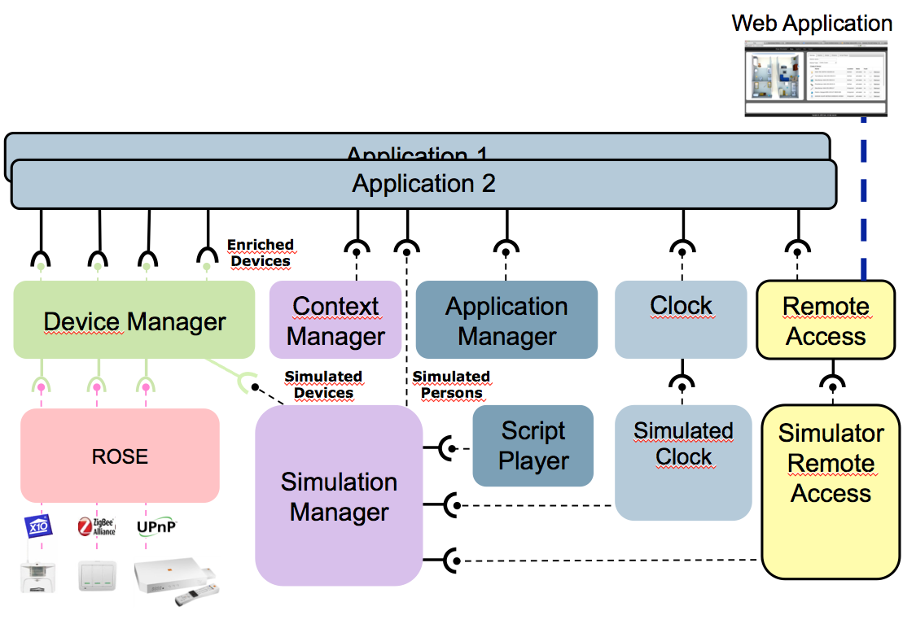

iCasa Architecture
iCasa framework provides required support to build digital home applications.
The architecture is composed of several parts:
Platform Architecture

iCasa platform is built on top of the OSGi platform (distributions rely on the Felix platform but you should be able to use your preferred one).
The platform has been designed to be extensible.
To this end, it uses a dynamic component model called iPOJO.
It is decomposed with following components:
- ROSE brings integration of external resources such as devices. It forces a clear separation between device discovery and device communication. It is extensible that allows easy support of new communication protocols. Every device is reified as an OSGi service which complies to the iCasa Device model.
- ContextManager brings contextual information to the platform such as localization properties. As a result, all devices may be enriched with localization properties.
- The DeviceManager component allows you to fine tune access rights to devices for applications at a method granularity grain.
- The ApplicationManager is in charge of application installation/uninstall/update.
- A TechnicalService is an optional component that has full access to the platform and brings new functionality to it. Several ones are available into the platform (Preferences, Clock, Scheduling, ZoneDimension...).
- The RemoteAccess component provides a REST like API to web applications. In addition, it provides a notification channel based on Atmosphere framework that allows you to choose a transport communication protocol according to your needs.
iCasa Device Model
iCasa framework provides a device model that must be used by device developers to expose device functionality, and by application developers to access that functionality.
In iCasa device model, each device has to publish a description based in a Java interface and a set of properties.
Device interface is used to expose device functionality, on the other hand properties set is used to known device state.
Each device MUST implement the fr.liglab.adele.icasa.device.GenericDevice interface that requires to expose a unique identifier called serial number.
iCasa Applications
iCasa applications are developed following the application model of the OSGi platform, in iCasa each device is exposed as an OSGi service in the its register.
In OSGi each service can provide one or more interfaces, in iCasa each device exposes the GenericDevice and also the specific device interface.
In addition, an iCasa application must be packaged as a Deployment package to be deployed on the platform.
The platform will automatically compute the devices which are eligible for a specific application and exposes them to it after access will be granted.
Web application
The web applications provided by iCasa are Simulator GUI and dashboard GUI.
Their architecture is the same with following parts:
- A Web Browser (Firefox) that executes the application code.
- The iCasa home gateway that embeds the iCasa execution platform and the web resources.
The web application part is mostly written in Coffeescript then compiled to Javascript.
It implements the architecture described in the following picture.

It contains following components:
- The DataModel is responsible to keep state of the resources. It relies on the Backbone framework which provides easy integration with REST like API.
- The NotificationManager listens through a specific communication channel to notifications from the iCasa platform in order to keep consistent the state in the web application. It uses the Atmosphere framework.
- The ViewModel is a data model dedicated to the view rendering. it relies on Knockout framework.
- The Views are implemented as html handlebars templates. Knockout synchronizes the views and .
- DeviceWidgets and Plugins may be implemented as HUBU components that provides predefined service contracts.
The full stack also contains:
- JQuery, JQuery UI and Bootstrap to build UI.
- Prefixfree to be as independent as possible from browser css specificities.
- Handlebars is used to define HTML templates of the different panels.
- Log4Javascript as our defualt javascript logger.
- RequireJS to modularize our web applications as an assembly of modules that precisely define dependencies and the data they export.
iCasa Simulator
The simulator module allows developers to test their digital home applications.
It enriches the platform with simulation functionalities and provides a web application to manage it.